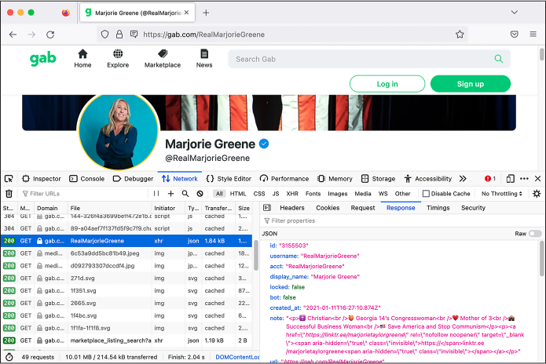
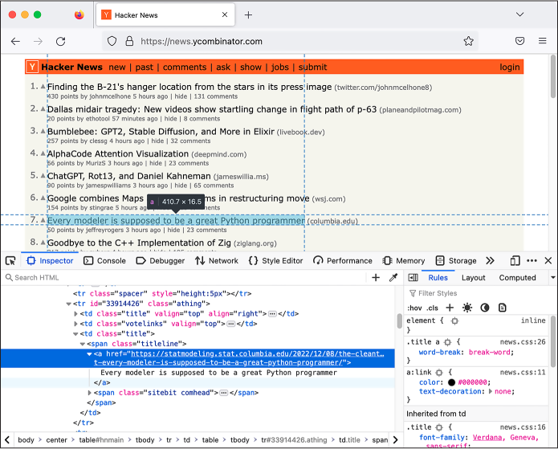

For example, consider the Parler dataset discussed in Chapter 11. Before Parler was kicked offline by its hosting provider for refusing to moderate content that encourages and incites violence, the archivist @donk_enby wrote code to scrape all 32TB of videos—over a million of them—to distribute to researchers and journalists. This appendix teaches you how to do something similar, if the occasion arises.
I’ll discuss legal considerations around web scraping and give a brief overview of HTTP, the protocol that web browsers use to communicate with websites. Finally, I describe three different techniques that allow you to scrape different types of websites. Complete Chapters 7, 8, 9, and 11 before following along, since you’ll need the basic knowledge of Python programming, CSVs, HTML, and JSON covered there.
Legal Considerations¶
Web scraping isn’t a crime, but its legality is still murky. In general, using computer systems with permission (like visiting a public website) is perfectly fine, but accessing them without authorization (like logging in to someone else’s account) is illegal hacking.
In the US, unauthorized access is a violation of the extremely outdated hacking law known as the Computer Fraud and Abuse Act of 1986, or CFAA. Web scraping shouldn’t fall under unauthorized access because it entails writing code simply to load public web pages that everyone can already access, rather than loading those pages the normal way (using a web browser). The problem is that scraping may violate a website’s terms of service, and there’s no legal consensus on whether this could constitute a violation of the CFAA—courts have ruled both ways.
Despite this, web scraping is an extremely common practice. Search engines like Google are essentially massive web scraping operations, as are archive sites like the Internet Archive’s Wayback Machine at https://web.archive.org. Companies often use web scraping to keep track of airline ticket prices, job listings, and other public data. It’s also a critical tool for investigative reporting.
NOTE The CFAA was originally passed, at least in part, in response to the 1983 film WarGames. In the film, a teenage hacker, played by Matthew Broderick, breaks into a military supercomputer and almost starts World War III by mistake. At the time, there weren’t any laws against hacking computers. The wildly popular film scared Congress into passing such laws.
The Markup, a nonprofit newsroom that investigates the tech industry, summed up the case for web scraping in an article that includes several examples of investigative journalism that relied on it. For example, the newsroom Reveal scraped content from extremist groups on Facebook, as well as law enforcement groups, and found significant overlap in membership. Reuters also scraped social media and message boards and uncovered an underground market for adopted kids; that investigation led to a kidnapping conviction. You can read the full article at https://themarkup.org/news/2020/12/03/why-web-scraping-is-vital-to-democracy.
Before you can start writing code to scrape the web yourself, you’ll need to understand what HTTP requests are.
HTTP Requests¶
When you load a web page, your web browser makes an HTTP request. You can think of this as the browser sending a message to the website’s server, saying, “I’d like to download the content for the page at this URL so I can look at it on my computer,” to which the server replies with an HTTP response that contains the content, typically HTML code. Your browser parses this HTML to figure out what else it needs to download to show you the full web page: images, fonts, Cascading Style Sheets (CSS) files that define how the web page looks, and JavaScript files that tell the website how to act. The browser makes another HTTP request for each of these resources, getting the content for them all. Websites also tend to make lots of HTTP requests while you’re using them, such as to check for updates and display them on the page in real time.
HTTP requests and responses have headers, or metadata about the request or response. You might need to send specific headers for your scraping to work properly, depending on the website you’re trying to scrape. You might also need your code to keep track of cookies, which are required for any site with a login option. There are many types of requests you can incorporate into your web scraping code, such as POST requests, which are used to submit forms. However, the code in this appendix will make only GET requests, the simplest and most common type of request, which download the content from a URL.
Many sites don’t like web scrapers for a variety of reasons, including the fact that if a script is hammering a site with HTTP requests, this increases the site’s bandwidth costs and could even cause it to crash. Sometimes sites will add roadblocks, such as limiting the number of requests you can make in a short amount of time or requiring that the user (or bot) fill out a CAPTCHA, in an effort to hinder or prevent scraping.
NOTE Some time around 2002, when I was in high school, my friends and I decided to make a song lyrics website. Similar sites existed, but they were incomplete. I thought it would be simple to scrape the lyrics from those other sites and make a single site that had [all] of the lyrics. I wrote a script to scrape thousands of lyrics from one particular site, but my script crashed while it was running. I realized it was because the source website had gone down. A few days later, the site came back online with a message: the owner was overjoyed to learn how much traffic the site was getting, but to keep up with it, they had to raise money to keep the site online. I felt bad about it, and we never ended up launching that lyrics site.
Scraping Techniques¶
This section describes three different techniques for web scraping, each introducing a different Python module. You’ll use a Python package called HTTPX to make HTTP requests, then use another called Beautiful Soup to help you select the data that you care about from a soup of messy HTML code. Finally, you’ll use a package called Selenium to write code that launches a web browser and controls what it does.
Web scraping requires a lot of trial and error as well as a thorough understanding of the layout of the website that you’re scraping data from. This appendix gives you just a few examples, not a comprehensive overview, but they should give you a head start on writing your own web scraping scripts in the future.
Loading Pages with HTTPX¶
HTTPX is a third-party Python package that lets you make your own HTTP requests with Python. In this section, you’ll learn how to use it to scrape the most recent posts from any given user on the far-right social media site Gab, which you read about in Chapters 1, 12, and 13.
Install the httpx module
with pip by running python3 -m pip install httpx. After importing httpx into your code, you should be able to
load a web page by running the httpx.get() function and passing in a URL. This
function returns a request object, and you can access the request’s
content with .content for
binary data or .text for
text data. For example, Listing B-1 shows Python code to make an HTTP
request to
https://example.com
and view its content.
>>> import httpx
>>> r = httpx.get("https://example.com")
>>> print(r.text)
<!doctype html>
<html>
<head>
<title>Example Domain</title>
--snip--
</head>
<body>
<div>
<h1>Example Domain</h1>
<p>This domain is for use in illustrative examples in documents. You may use this
domain in literature without prior coordination or asking for permission.</p>
<p><a href="https://www.iana.org/domains/example">More information...</a></p>
</div>
</body>
</html>
Listing B-1: Scraping the HTML from https://example.com
First, this code imports the httpx module. It then calls the
httpx.get() function,
passing in a URL as an argument, and saves the response in the variable
r. Finally, it displays the
r.text variable, which is
all of the HTML code that makes up
https://example.com.
(If you’re loading a binary file, like an image, then you can get the
binary data in the r.content
variable.) This simple httpx.get() function is often all you need to
scrape entire databases of information from the web. The script I’ll
show you in this section that scrapes posts from Gab relies on this
function.
Since web scraping means writing code that loads URLs, your first step should be to determine which URLs you need to load. The easiest way to do this is to use the built-in developer tools in your web browser. You can open them in most browsers by pressing the F12 key. In both Firefox and Chrome, you can see the HTTP requests your browser is making, and what the responses look like, in the Network tab of the developer tools. For example, if you open your browser’s developer tools and load the profile page of a Gab user, you can see what HTTP requests it makes to gather that user’s most recent posts. Once you have that information, you can write a script that makes the same HTTP requests for you.
NOTE The developer tools built in to Firefox, Chrome, and other browsers are a great way to learn what data your web browser is sending back and forth on the websites you’re visiting, to see exactly how web pages are laid out, and more. For more about Firefox’s developer tools, see https://firefox-source-docs.mozilla.org/devtools-user/index.html; for Chrome, see https://developer.chrome.com/docs/devtools.
For example, the Gab page for Marjorie Taylor Greene, the US congressperson who’s also a Christian nationalist and QAnon conspiracy theorist, is located at https://gab.com/RealMarjorieGreene. In a web browser, load that URL and then open the developer tools. Refresh the page to get all of the HTTP requests to show up in the Network tab.
In the Network tab, you should see several HTTP requests listed on the left half of the developer tools panel. When you click a request, the right half of the panel displays information about it. The right half has its own tabs that you can switch through to see details like the request’s headers, cookies, and the body of the request and its response.
When I loaded this page and looked through my browser’s HTTP requests and their responses, I decided I was most interested in the following URLs:
https://gab.com/api/v1/account_by_username/RealMarjorieGreene The response to this request includes a JSON object containing information about Greene’s Gab profile, including her Gab account ID, 3155503.
https://gab.com/api/v1/accounts/3155503/statuses?sort_by=newest The response to this request includes a JSON array of Greene’s most recent Gab posts. Her account ID is in the URL itself.
The first URL let me look up the Gab ID of any account, and the second URL let me look up the recent posts from an account, based on its Gab ID. Figure B-1 shows Firefox’s developer tools in action while loading this page.

Figure B-1: Viewing the JSON response to a specific request in the Firefox developer tools Network tab
As you can see, this response is in JSON format. I wanted to write a script that, given a Gab username, would download the latest posts from that user. In order to write it, I had to spend some time looking at the JSON in these responses to understand how it was structured and what information I was interested in. For example, since I wanted to start with a Gab username, my script would first need to load the URL https://gab.com/api/v1/account_by_username/<username>, replacing <username> with my target username. It would then need to parse the JSON it receives to extract this Gab user’s ID. Then, using that ID, it would need to load the URL https://gab.com/api/v1/accounts/<id>/statuses?sort_by=newest, replacing <id> with the Gab ID of the target account. Finally, it would need to parse that JSON response to display the latest Gab posts.
Based on this research, I wrote the following script to scrape the latest posts from any target Gab account. Here’s the code for this web scraping script, httpx-example.py:
import httpx
import click
@click.command()
@click.argument("gab_username") ❶
def main(gab_username):
"""Download a user's posts from Gab"""
# Get information about the user
r = httpx.get(f"https://gab.com/api/v1/account_by_username/{gab_username}") ❷
user_info = r.json()
if "error" in user_info:
print(user_info["error"])
return
# Display some user info
click.echo(f"Display name: {user_info['display_name']}")
click.echo(f"{user_info['followers_count']:,} followers, {user_info['following_count']:,} following, {user_info['statuses_count']:,} posts") ❸
print()
# Get this user's posts
r = httpx.get(f"https://gab.com/api/v1/accounts/{user_info['id']}/statuses") ❹
posts = r.json()
for post in posts:
if post["reblog"]:
print(f"repost @{post['reblog']['account']['username']}: {post['reblog']['created_at']}: {post['reblog']['content']}")
else:
print(f"{post['created_at']}: {post['content']}")
if __name__ == "__main__":
main()
This script first imports the httpx module, since it will need that module
to make HTTP requests. Like many Python scripts throughout this book, it
uses the click module to
accept CLI arguments. In this case, it accepts an argument called
gab_username, the username
of the target Gab user ❶.
When the main() function
runs, it downloads information about the target user by calling the
httpx.get() function and
passing in the URL
https://gab.com/api/v1/account_by_username/<gab_username>,
replacing <gab_username> with the value of the CLI argument and
storing the result in the variable r ❷. As my browser’s developer tools made clear,
the response should be a JSON object, so the script next calls
r.json() on it to make HTTPX
convert it into a dictionary called user_info. It then checks to see if
user_info has an
error key; if so, it
displays the error message and quits early. If you try loading that URL
with an invalid username, you’ll see the error message in the
error key: the string
Record not found.
Once the script has successfully retrieved information about a Gab user,
it displays some of that information—the display name, number of
followers, number of follows, and number of posts—in the terminal
❸. The script then uses
HTTPX to make another HTTP request, this time to load the user’s posts.
Note that this URL includes user_info['id'], which is the ID of the user
discovered from the previous HTTP request ❹. As before, it calls r.json() to convert the JSON into a Python
object, this time a list called posts. In the following for loop, the script loops through the
list of posts, displaying them one at a time.
You can find a complete copy of this code in the book’s GitHub repo at https://github.com/micahflee/hacks-leaks-and-revelations/blob/main/appendix-b/httpx-example.py.
At the time of writing, I could use this script
to download the recent posts of any Gab user by including their username
as an argument. For example, here’s what it looked like when I ran this
script on the account of Andrew Torba, Gab’s founder and owner and the
author of the book Christian Nationalism, whose Gab username is a:
micah@trapdoor appendix-b % python3 httpx-example.py a
Display name: Andrew Torba
3,803,381 followers, 2,662 following, 67,317 posts
2022-12-07T04:56:56.989Z: Is it really so crazy to think that I care nothing
at all about a particular historical atrocity that happened on another
continent 80 years ago when there is a genocide of babies happening right
here, right now, today?
repost @ScipioAmericanus: 2022-12-07T04:50:37.560Z: Jews literally believe
that they can reject God because they're justified according to the flesh and
their own laws. Wicked stuff.
--snip--
The output shows Torba’s display name, statistics about his account, and several of his latest posts to Gab. As you can see, they’re on the fascist side. Torba has 3.8 million followers, because every Gab user automatically follows him when they create an account.
NOTE While 3.8 million followers sounds like a lot, most of those accounts aren’t active. In 2021, I analyzed hacked Gab data and discovered that of the roughly 4 million accounts, only 1.5 million of them had posted any content at all, only 400,000 had posted more than 10 times, and only 100,000 of those had posted anything recently. You can read my analysis at https://theintercept.com/2021/03/15/gab-hack-donald-trump-parler-extremists/.
Try running httpx-example.py on any Gab account you’d like. Unless Gab’s website has changed, this should download the recent posts from that user. However, it’s possible that by the time you run this script, the site may have changed so that the script doesn’t work anymore. This is the unfortunate nature of web scraping. Every script you write that scrapes the web relies on websites acting one specific way; if they don’t, your script might break. It’s often a simple matter to update a script so it works again, though. To do so, you’d need to use your browser’s developer tools to figure out how the website changed, and then update your script to match its new URLs and behavior—basically, repeat what you just did. In the worst case, if the website has changed a lot, you may need to rewrite your scraping script from scratch.
Using Python logic and HTTPX, you can also modify the script to get all of the posts for a given account, rather than just the recent ones. You could write a script that finds a target Gab user and downloads the list of accounts they follow. Or you can take a target Gab post and download a list of accounts that liked it. You’d just need to learn exactly which HTTP requests to make to get the information you’re interested in, and then have Python make those requests for you. Some of these tasks would be more complicated than others—for example, to get the data you’re looking for, you may need to create a Gab account and have your scraper make requests while you’re logged in. The more web scraping scripts like these you write, the better at it you’ll get.
To learn more about using the HTTPX package, check out its documentation at https://www.python-httpx.org.
Parsing HTML with Beautiful Soup¶
Scraping Gab was simple because the responses to the HTTP requests were
in JSON format, but pulling specific information out of the HTML in a
web page is more challenging. The easiest way to parse HTML in Python is
to use a package aptly called Beautiful Soup (BS4 for short). Install
the bs4 module by running
python3 -m pip install bs4.
For example, here’s some code that uses the httpx module to download the HTML from
https://example.com, like you did in the last section:
>>> import httpx
>>> from bs4 import BeautifulSoup
>>> r = httpx.get("https://example.com")
This code imports the httpx
module, then imports Beautiful Soup from the bs4 module. Next, it uses
httpx.get() to make an HTTP
request to
https://example.com
and stores the result in r,
allowing you to access the HTML string itself using the r.text variable. As you saw in Listing B-1,
this HTTP response is in HTML format and includes the page’s title
inside the <title> tag, as
well as two paragraphs of text within <p> tags inside the <body> tag.
Using BS4, you can parse this HTML to select specific pieces of content—in this case, the page title and the content of the first paragraph:
>>> soup = BeautifulSoup(r.text, "html.parser")
>>> print(soup.title.text)
Example Domain
>>> paragraph = soup.find("p")
>>> print(paragraph.text)
This domain is for use in illustrative examples in documents. You may use this
domain in literature without prior coordination or asking for permission.
>>> for link in soup.find_all("a"):
... print(link.get("href"))
...
https://www.iana.org/domains/example
This code parses the HTML string (r.text) using BS4, storing the resulting
BeautifulSoup object in the
soup variable defined in the
first line of code. This allows you to use soup to extract whatever information you’re
interested in from the HTML. The code then displays the page title by
printing the value of soup.title.text.
Next, the script searches for the first paragraph on the HTML page and
displays its text by printing the value of paragraph.text. Finally, it finds all of the links on
the page (which are <a>
tags), loops through them in a for loop, and
prints the URL for each link (the URL is defined in the href attribute of <a> tags). The
https://example.com
web page has only one link, so the code displays just that.
For practice, next we’ll explore a script that scrapes content from Hacker News (https://news.ycombinator.com), a news aggregator site about tech startups and computer science. Hacker News is similar to Reddit in that anyone can post links, and users then upvote and downvote those links, with the most popular ones rising to the top. Its web design is simple and has remained the same for many years, making it a good choice for web scraping practice.
Your practice script will download the title and URL from the first five pages of popular links. The front page of Hacker News displays the 30 most popular recent posts. If you scroll to the bottom and click More, you’ll see the second page of results, showing the next 30 most popular recent posts, at the https://news.ycombinator.com/?p=2 URL. Likewise, the third page of results has the URL https://news.ycombinator.com/?p=3, and so on.
Figure B-2 shows a Firefox window with Hacker
News loaded and the developer tools open. This time, I’ve switched to
the Inspector tab, which allows you to inspect how the HTML of the page
is laid out. The Inspector tab shows all of the HTML tags that make up
the page, and when you mouse over an individual tag, your browser
highlights the corresponding design element on the web page. In this
example, I moused over an <a> tag, and the browser highlighted that
element.

Figure B-2: Using Firefox’s developer tools to inspect the HTML that makes up a Hacker News post
The developer tools show that all posts in the
Hacker News site are laid out in an HTML table. In HTML, tables are
defined within <table> tags.
Each row is a <tr> tag, and
each cell within it has a <td> tag. Here’s the HTML code from a
typical Hacker News post:
<tr class="athing" id="34466985">
<td class="title" valign="top" align="right"><span class="rank">4.</span></td>
<td class="votelinks" valign="top">
<center>
<a id="up_34466985" href="vote?id=34466985&how=up&goto=news">
<div class="votearrow" title="upvote"></div></a>
</center>
</td>
<td class="title">
<span class="titleline">
<a href="https://people.ece.cornell.edu/land/courses/ece4760/RP2040/C_SDK_DMA_machine/DMA_machine_rp2040.html">
Direct Memory Access computing machine RP2040
</a>
<span class="sitebit comhead"> (<a href="from?site=cornell.edu">
<span class="sitestr">cornell.edu</span></a>)
</span>
</span>
</td>
</tr>
The rows with class="athing", or the value of the attribute
class set to
athing, contain links that
users have posted. Inside each athing row, there are three cells (that is,
three <``td> tags). The last of these cells
contains the actual link, the <a> tag.
The following script, bs4-example.py, scrapes the titles and URLs of the first five pages of the most popular posts recently posted on Hacker News, saving them in a CSV spreadsheet and also displaying them to the terminal:
import csv
import time
import httpx
from bs4 import BeautifulSoup
def main():
with open("output.csv", "w") as f:
writer = csv.DictWriter(f, fieldnames=["Title", "URL"])
writer.writeheader()
for page_number in range(1, 6):
print(f"LOADING PAGE {page_number}")
r = httpx.get(f"https://news.ycombinator.com/?p={page_number}")
print("")
soup = BeautifulSoup(r.text, "html.parser")
for table_row in soup.find_all("tr", class_="athing"):
table_cells = table_row.find_all("td")
last_cell = table_cells[-1]
link = last_cell.find("a")
link_url = link.get("href")
print(link.text)
print(link_url)
print("")
writer.writerow({"Title": link.text, "URL": link_url})
time.sleep(1)
if __name__ == "__main__":
main()
First, the script imports the csv, time, httpx, and bs4 modules. In the main() function, it opens a new CSV for
writing called output.csv, creates a csv.DictWriter() object, and uses that object to write
the CSV headers (Title and
URL, in this case), as you
learned in Chapter 9.
The following for loop loops
through the results of range(1, 6), saving each item as page. The range() function is useful for looping through
a list of numbers; in this case, it starts with 1, then 2, and so on
until it hits 6 and then stops, meaning it returns the numbers 1 through
5. The code displays the page number that it’s about to load, then makes
the HTTP request to load that page using httpx.get(), creating a different URL for the
current page on each loop. After making each HTTP request that gets a
page of results, the code parses all of the HTML from that page using
BS4, storing it as soup.
Now things get slightly trickier. As noted earlier, all of the HTML
table rows that have the class athing contain links that users posted. The
script gets a list of all of these rows by calling
soup.find_all("tr", class_="athing"). The find_all() method searches the BS4 object
soup for all instances of
the HTML tag <tr> and
returns a list of matches. In this case, the code also includes
class_="athing", which tells
BS4 to include only tags that have the class attribute set to athing. The for loop loops through them, saving each
item in the table_row
variable.
Now that the code is looping through each table row that contains a link
posted by a user, it goes on to find that link tag. There are several
links in each table row, so it figures out which one is the link a user
posted. First, it calls table_row.find_all("td") to get a list of all of the table
cells inside table_row,
storing that list in table_cells. As noted earlier, the last cell
contains the link that we care about. Therefore, the code pulls out just
the last cell in this list, storing it in the variable
last_cell (the −1 index is the last item in a list). The
code searches just last_cell
for the link it contains (the <a> tag), and uses print() to display the link’s title and URL.
Finally, it calls writer.writerow() to also save this row into the CSV.
The code does this once for each of the page’s 30 rows. It then waits
one second, using time.sleep(1), and moves on to the next page, until
it has extracted all the links from the first five pages. When the
script is finished running, it creates a file called output.csv that
should contain the 150 most recent popular links posted to Hacker News.
Most of the time when you’re scraping
real data for an investigation, you’ll save it to a CSV spreadsheet,
like this script did, or to a SQL database (as discussed in Chapter 12) so that you can work with it later.
NOTE The find_all() method in this code passes an argument called class_ instead of class. This is because class is a Python keyword and can’t be used as a variable name. If you want to use
find_all() to select tags using any other attribute, then the argument name will be the same as the attribute name. For example, soup.find _all("a", href="https://example.com") will find all link tags in
soup that have an href attribute set to https://example.com.
You can also find a copy of this code in the book’s GitHub repo at https://github.com/micahflee/hacks-leaks-and-revelations/blob/main/appendix-b/bs4-example.py.
Here’s what it looked like when I ran this script:
micah@trapdoor appendix-b % python3 bs4-example.py
LOADING PAGE 1
Buy Hi-Resolution Satellite Images of Any Place on Earth
https://www.skyfi.com/pricing
The McMurdo Webcams
https://www.usap.gov/videoclipsandmaps/mcmwebcam.cfm
--snip--
LOADING PAGE 2
Thoughts on the Python Packaging Ecosystem
https://pradyunsg.me/blog/2023/01/21/thoughts-on-python-packaging/
--snip--
Try running it yourself now. Assuming Hacker News hasn’t updated its web design, it should work fine; however, the URLs will differ because the most popular recent links on Hacker News are constantly changing.
This script scrapes only the first five pages of content on Hacker News. In theory, you could scrape all the content on the site since its founding in 2007. To do so, you’d have to modify the script to stop not after page 5 but when it gets to the very last page, presumably one that doesn’t have any links on it. This assumes that the site will actually show you content that old and that you could make those millions of HTTP requests without it blocking your IP address. I don’t know if this is true or not with Hacker News—I haven’t attempted to scrape everything from this site myself.
I mentioned in the HTTP Requests section that some websites
add roadblocks to make scraping more difficult, and this turned out to
be true with Hacker News. When I first wrote this script, it didn’t
include the time .sleep(1)
code, which waits one second between each HTTP request. I found that
Hacker News limits how quickly you can make HTTP requests, and the fifth
request in quick succession responded with an HTML page with the error
message
Sorry, we're not able to serve your requests this quickly. I solved
this problem by waiting one second between HTTP requests. It’s common to
run into hurdles like this while you’re writing scrapers, but it’s also
often a simple matter of modifying your script like this to get around
these roadblocks.
BS4 WEB SCRAPING FOR TRAVEL¶
In 2014, shortly after Edward Snowden leaked his massive dataset of top-secret NSA documents to Laura Poitras and Glenn Greenwald, I scheduled a trip to Rio de Janeiro, where Greenwald lived, to help him with computer security and to look through the Snowden docs myself. (This was several years before Greenwald unfortunately became a far-right pundit who openly supports the American fascist movement.) At the time, Americans could travel to Brazil only if they had a visa, and they needed to visit a consulate in person to get one. However, the San Francisco consulate’s website told me that all appointments were booked for the next two months.
To solve this problem, I wrote a simple Python script that scraped the consulate’s availability calendar web page, using BS4 to loop through each cell in the calendar and see if any appointment slots were open. If it found an opening, my script would send me a text message. I then configured a VPS to run this script every 10 minutes so I’d be the first to know if someone canceled their appointment. In less than two days, I got a text, snagged an appointment, and got my visa. I flew to Rio a few days later.
To learn more about using the BS4 package, check out its documentation at https://www.crummy.com/software/BeautifulSoup/bs4/doc/.
Automating Web Browsers with Selenium¶
Sometimes scraping websites is too challenging for Beautiful Soup alone. This is often the case with sites that are JavaScript-heavy, where viewing the HTML source doesn’t result in much information you’re interested in. This is true for sites like Facebook, YouTube, and Google Maps. It’s much simpler to get information from this sort of site by using a web browser than by untangling the complicated web of HTTP requests that you’d need to make to get the same information. Some websites also put up barriers to scraping. They might add JavaScript code that ensures visitors are using real web browsers before showing them content, preventing users from just making HTTP requests using cURL (discussed in Chapter 4) or a Python package like HTTPX.
You can control a real web browser for scraping purposes by using software called Selenium. Scripts that just make HTTP requests are more efficient and run much quicker than using Selenium because they don’t require running a whole web browser and downloading all of the resources of the target website. When I’m writing a scraper, I generally start by attempting to scrape the site using HTTPX, but if this technique turns out to be too complicated, I switch to Selenium.
To use the Selenium Python package, you must also install a web driver, software that Selenium uses to control a web browser. Selenium supports Chrome, Firefox, Safari, and Edge. The example in this section uses the Firefox driver, which is called geckodriver.
To continue, follow the instructions for your operating system, then skip to the Testing Selenium in the Python Interpreter section.
Installing Selenium and geckodriver on Windows¶
For this task, Windows users should work with native Windows tools
rather than WSL. Install the selenium Python module by opening PowerShell
and running the following command:
python -m pip install selenium
Also make sure you have Firefox installed (see https://www.mozilla.org/en-US/firefox/new/).
To install geckodriver, go to https://github.com/mozilla/geckodriver/releases. You’ll see several ZIP files for the latest version of geckodriver that you can download. Download the appropriate Windows version and unzip it. You should end up with a single file called geckodriver.exe. In File Explorer, copy this file and paste it into C:\Windows\System32. This will allow you to run geckodriver from PowerShell no matter what your working directory is.
Installing Selenium and geckodriver on macOS¶
If you’re using macOS, open a terminal. Install the selenium Python module by running the
following:
python3 -m pip install selenium
Then install geckodriver by running the following:
brew install geckodriver
This should give you everything you need to use Selenium in Python.
Installing Selenium and geckodriver on Linux¶
If you’re using Linux, open a terminal. Install the selenium Python module by running the
following:
python3 -m pip install selenium
Install geckodriver by running the following:
sudo apt update
sudo apt install firefox-geckodriver
This should give you everything you need to use Selenium in Python.
Testing Selenium in the Python Interpreter¶
Now that you have Selenium and geckodriver installed, test them out in the Python interpreter by loading this book’s git repo website on GitHub to get a feel for how Selenium allows you to control a web browser:
>>> from selenium import webdriver
>>> driver = webdriver.Firefox()
>>> driver.get("https://github.com/micahflee/hacks-leaks-and-revelations")
>>> print(driver.title)
GitHub - micahflee/hacks-leaks-and-revelations: Code that goes along with the Hacks, Leaks, and Revelations book
>>> driver.quit()
This code first imports webdriver from the selenium module. It then creates a new Firefox
driver by calling webdriver.Firefox() and saves it in the variable
driver. When you create the
Selenium driver, a new Firefox window should open on your computer, and
a robot icon should appear in the address bar—this is how you know
that this browser is being controlled by Selenium.
The code then instructs the browser to load the URL
https://github.com/micahflee/hacks-leaks-and-revelations.
After running the command, you should see Firefox load that GitHub page.
Once the page is loaded, including all of its JavaScript or other
complicated components, you can write code to control it. In this case,
the code just displays the title of the page in the terminal with
print(driver.title).
Finally, it quits Firefox.
Automating Screenshots with Selenium¶
Now let’s try something slightly more complicated. In this section, we’ll go over a script that will take two arguments: a location name and the filename of a screenshot to save. Using Selenium, the script will load Google Maps at https://maps.google.com, search for the location, zoom in a little, turn on the satellite images layer, and take a screenshot of the satellite image of the location, saving it to disk.
While I’m programming web scrapers, I find it helpful to have an interactive Python interpreter open in a terminal where I can test out Selenium or BS4 commands, allowing me to see if they work in real time without having to start my script over. When I’m writing a Selenium script, I open developer tools inside the browser I’m driving to inspect all of the HTML tags, which helps me figure out which commands to run. Once I get something working, I copy the working code into the script that I’m writing in my text editor.
For example, to search for the location in Google Maps, I needed to make
the Selenium browser select the search box, type the location, and press ENTER. In HTML, tags often have id attributes. By using the
Firefox developer tools, I discovered that the search box in Google
Maps, which is an <input>
tag, includes the id="searchboxinput" attribute, meaning the search box has
an id of
searchboxinput. That allowed
me to enter code into the Python interpreter that would select the
search box, type a search query into it, and press ENTER in
the browser it was controlling. I didn’t always get it right on the
first try, but after some trial and error, I wrote some working code. At
this point, I added that code to my script.
I also used developer tools to figure out how to turn on the satellite
image layer. In the bottom-left corner of Google Maps is an icon called
the minimap that lets you toggle different layers on and off. The
developer tools showed me that this icon had an id of minimap and that I could click one of the
buttons in the minimap element to turn on the satellite layer; just like
with the search box, I tested clicking this icon in the Python
interpreter until I got it working.
The following script, selenium-example.py, uses Selenium to take satellite image screenshots from Google Maps for you:
import click
import time
from selenium import webdriver
from selenium.webdriver.common.keys import Keys
from selenium.webdriver.common.by import By
@click.command()
@click.argument("location")
@click.argument("screenshot_filename", type=click.Path(exists=False))
def main(location, screenshot_filename):
driver = webdriver.Firefox()
driver.implicitly_wait(10)
driver.get("https://maps.google.com")
search_box = driver.find_element(By.ID, "searchboxinput")
search_box.clear()
search_box.send_keys(location)
search_box.send_keys(Keys.RETURN)
body = driver.find_element(By.TAG_NAME, "body")
body.send_keys(Keys.ADD)
body.send_keys(Keys.ADD)
minimap = driver.find_element(By.ID, "minimap")
buttons = minimap.find_elements(By.TAG_NAME, "button")
buttons[2].click()
time.sleep(2)
driver.save_screenshot(screenshot_filename)
driver.quit()
if __name__ == "__main__":
main()
First, the script imports the click and time modules and then several components
from the selenium module.
Specifically, it imports webdriver, the component required to actually
launch and control a web browser. It also imports Keys and By to automate pressing ENTER
after searching and to search for HTML elements by their id attribute.
NOTE Exactly what you need to import from selenium depends on what you’re trying
to do. Consult the Selenium for Python documentation to learn exactly
what you need and when—that’s how I figured it out.
The code includes Click decorators before the main() function, making this a command line
program that takes two arguments, location and screenshot_filename. The location variable is a Google Maps search
query, like Manhattan, NY or The Great Pyramid of Giza, and
screenshot_filename is the
path to save the final screenshot.
When the main() function
runs, the code starts by creating a Selenium web driver, which should
open a Firefox window that the script will then control. The
driver.implicitly_wait(10)
function tells Selenium to wait up to 10 seconds for page elements to
load. The code loads https://maps.google.com in Firefox with the driver.get() function, then finds the search box
element on the page, storing it in the variable search_box. It finds the search box by running
driver.find_element(By.ID, "searchboxinput"). Once the code has this search box
object stored in search_box,
it clears any text in the text box by calling the clear() method on it, and then it types the
text in the location string
by calling send_keys(location). Finally, it presses ENTER
to search for this location by calling send_keys(Keys.RETURN). At this point, Google Maps should
search for the location.
The code then zooms in by selecting the <body> tag, the main HTML tag that contains
all other tags, then telling Firefox to press the + key twice, which is
the Google Maps keyboard shortcut to zoom in.
At this point, Firefox has loaded Google Maps, searched for a location,
and zoomed in on that location. The code then turns on the satellite
image layer by locating the minimap in the corner of the screen. Once it
finds this, it locates all of the <button> tags inside the minimap by calling the
find_elements(By.TAG_NAME, "button") method, and then it clicks the third
button, calling the click()
method on the third element (which has an index of 2) on the list of buttons. This turns on
the satellite images layer.
Finally, the script waits two seconds, just to make sure the satellite
images have finished loading, and then saves a screenshot of the web
page to screenshot_filename.
When it’s done, it quits Firefox.
You can find a complete copy of this code in the book’s GitHub repo at https://github.com/micahflee/hacks-leaks-and-revelations/blob/main/appendix-b/selenium-example.py.
You can use selenium-example.py to generate Google Maps screenshots of any location you like. For example, I ran the following command:
python3 selenium-example.py "great pyramid of giza" giza.png
This opened a Firefox window that was controlled by Selenium. It loaded Google Maps, searched for great pyramid of giza, zoomed in, turned on the satellite images layer, and saved a screenshot of the window in the file giza.png. Figure B-3 shows giza.png, scraped from Google Maps.
Figure B-3: A satellite image of the Great Pyramid of Giza from Selenium
On your own, it might also be fun to try searching for US Capitol; Washington, DC; Kremlin, Moscow; or Tokyo, Japan.
This example script used Selenium to take screenshots. You could modify it so that Selenium automatically takes a screenshot each time a public figure posts to social media, so you’ll have a record of it in case they delete it. You’re not limited to cataloging information in this way, though; you can also use Selenium to extract information from web pages and store them in CSV spreadsheets or any other format you’d like, just like you can with BS4.
To learn more about Selenium for Python, check out its documentation at https://selenium-python.readthedocs.io.
Next Steps¶
In this appendix, I’ve gone over a few techniques for web scraping and provided some simple example scripts to show off the basics of how they work. However, in order to write code for your future web scraping projects, you’ll probably need to learn more about web development than is covered in this book, depending on what site you’re trying to scrape. For example, your HTTPX and BS4 scraper might need to first log in to a website and then make all of its future requests as that logged-in user in order to access the content you’re after. This would require making HTTP POST requests instead of just GET requests and keeping track of cookies, neither of which I’ve covered here.
As a next step, I recommend getting more comfortable with the developer tools built into browsers. This will help familiarize you with the HTTP requests your browser makes and what their responses include. Spend more time browsing the layout of HTML elements, as you did in this appendix. The more you learn about web development, including more complex topics like HTTP headers and cookies, the easier it will be for you to scrape the web. If you can access information in a web browser, you can write a script that automates accessing that information.